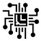
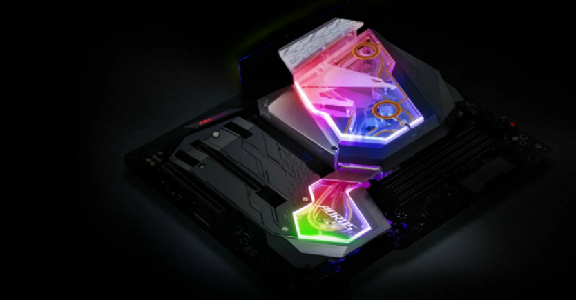
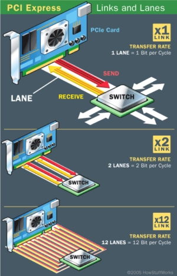
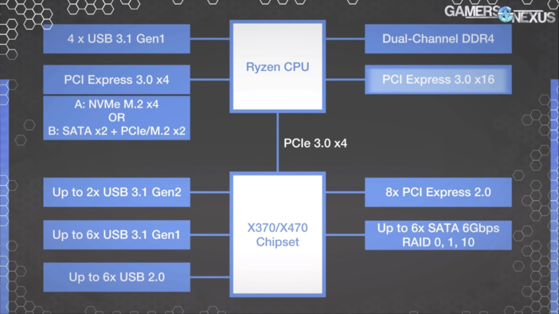
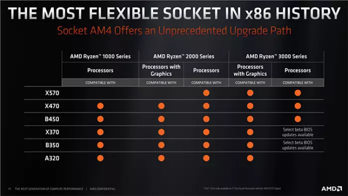
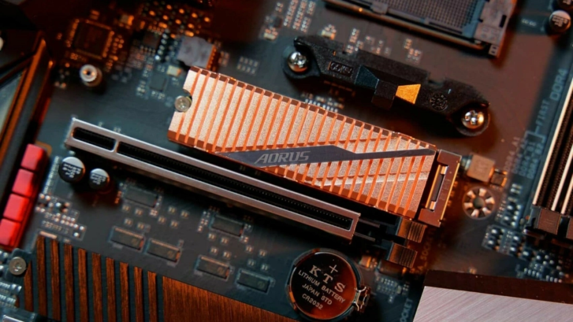
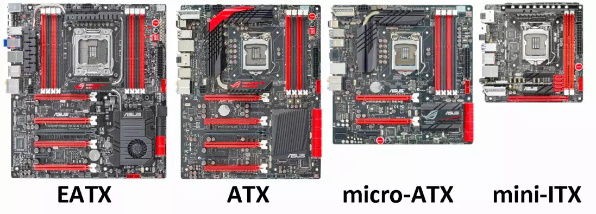
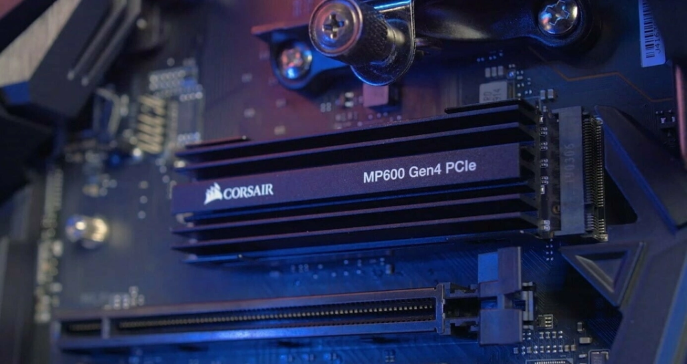
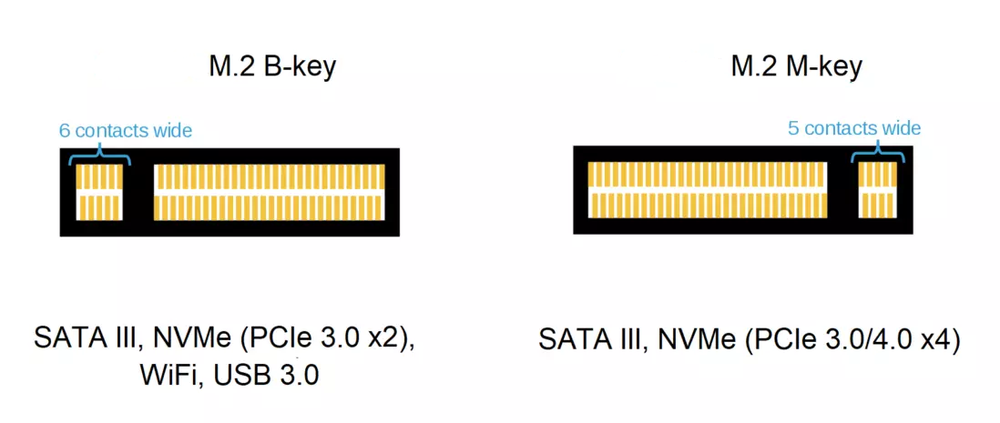

 Як влаштована материнська плата, чим відрізняються чіпсети і чому важливо розумітися на ланцюгах живлення.
Материнська плата – основа будь-якого комп'ютера (і будь-якого електронного пристрою в цілому), і ринок комп'ютерних комплектуючих переповнений сотнями моделей.
Ми розбили наш гайд на невеликі пункти, які допоможуть краще розібратися, як відрізняються однакові на вигляд «дошки» і де пролягає кордон між маркетингом та справді важливими характеристиками.
Як влаштована материнська плата
Щоб краще зрозуміти різницю між материнськими платами, важливо спочатку розібратися, що взагалі є цей пристрій.
Якщо не вдаватися зокрема, материнська плата є набором слотів і мікросхем, розпаяних на багатошаровому аркуші текстоліту, всередині якого прокладені «доріжки» для зв'язку компонентів один з одним.
Всіми компонентами управляє центральний процесор (CPU), встановлений у сокет: найважливішими безпосередньо, а рештою через посередника, так званий чіпсет.
- Сокет - це роз'єм, в який вставляється процесор. Сокет забезпечує CPU енергією та з'єднує кристал із доріжками на материнській платі.
- Чіпсет – це набір мікросхем, який організує роботу периферійних компонентів системи (USB-порти, накопичувачі та плати розширення) та забезпечує їх «спілкування» з процесором.
Від чіпсету часто залежить можливість розгону - якщо він не підтримує оверклокінгу, то змінити множник навіть розблокованого процесора не вийде. Крім цього, відмінності між чіпсетами мало позначаються на звичайному користувачеві.
Виробники материнських плат можуть самі додавати бездротові модулі та контролери швидкісних USB-портів, якщо в чіпсеті вони не передбачені.
Рахуємо лінії PCIe
З чіпсетом будь-який процесор з'єднують лише 4 доріжки. Intel мають спеціальну назву DMI 3.0, але принцип роботи той же, що і у стандарту PCIe 3.0. Сучасні материнки для AMD використовують новий стандарт PCIe 4.0 із подвоєною пропускною здатністю.
Від чіпсету до накопичувачів, PCIe-слотів, USB-портів, контролерів бездротового зв'язку та інших елементів зазвичай розходиться 20 або більше власних ліній PCIe.
Для найважливіших компонентів системи, що потребують швидкого та безперервного з'єднання з процесором, передбачені виділені лінії зв'язку. Процесори Intel домашнього рівня (аж до Core i9) мають 16 таких ліній, а "камені" від AMD (до Ryzen 9) - 20. У специфікації Ryzen зазвичай вказують 24 лінії, але це з урахуванням чіпсету.
Виділені лінії PCIe в основному використовують для підключення відеокарт, але з недавніх пір в деяких платах також стали підводити до M.2 слоту для SSD-накопичувача.
Відеокарти підключаються до слоту PCIe x16 (він з'єднаний з процесором 16 лініями), але в деяких випадках їм вистачає і 8 ліній. NVMe SSD використовують 2 або 4 лінії.
Тобто на платах AMD одна топова відеокарта і один швидкий накопичувач у слоті PCIe x4 можуть одночасно працювати на повну потужність, а Intel їм доведеться ділити між собою 16 доступних ліній.
Пристрої, підключені до чіпсету, не можуть використовувати більше 4-х ліній PCIe через обмежену пропускну здатність каналу між чіпсетом і процесором.
Відмінності материнських плат для AMD
Усі сучасні (з 2017 року) процесори AMD Ryzen та Athlon використовують універсальний сокет AM4. При цьому покоління процесорів та чіпсетів змінюються щороку.
Між собою чіпсети AMD відрізняються набором можливостей та маркетинговим позиціонуванням:
- X570 – актуальний флагманський чіпсет для продуктивних систем. Тільки він повністю підтримує новий швидкий стандарт PCIe 4.0 на всіх лініях.
- X470 — чіпсет минулого покоління, який практично не втратив актуальності. Деякі материнки з ним обмежено підтримують PCIe 4.0 і лише виділених лініях.
- B450 - чіпсет для недорогих материнських плат, що підходить для ігрових ПК середнього рівня. Підтримує менше портів USB, ніж старші моделі, і не дозволяє встановити дві відеокарти Nvidia в режимі SLI. Багато моделей підтримують PCIe 4.0, але тільки виділених лініях.
- A320 - чіпсет для ультрабюджетних рішень, у деяких випадках не підтримує розгін процесора.
- X399 – чіпсет для сокету TR4 для багатоядерних професійних процесорів Threadripper. Ми не будемо докладно розглядати цей сегмент у цій статті.
Зверніть увагу на те, що процесори Ryzen 3000 "з коробки" сумісні тільки з материнськими платами з чіпсетом X570. Для X470, B450 і плат з чіпсетами 300-ї серії потрібно спочатку перепрошувати BIOS.
Розганяти процесори AMD можна будь-якому з актуальних чіпсетів. На дорогих материнських платах з X570 і X470 є шанс досягти більш високих результатів, оскільки якість компонетів у них зазвичай вища.
Материнські плати для AMD Ryzen передбачають підключення кількох портів USB 3.1 безпосередньо до процесора, це може бути корисним при підключенні зовнішніх USB-накопичувачів.
Стандарт PCIe 4.0 пропонує значно більшу швидкість передачі даних, ніж PCIe 3.0, але в 2020 потрібен далеко не всім.
Сучасні відеокарти не потребують таких швидкостей, а спеціальні накопичувачі для нового стандарту поки що рідкісні, дорогі і потрібні, скоріше, для професійної роботи з великими файлами та масивами інформації.
Найбільшу користь PCIe 4.0 приносить із систем з великою кількістю накопичувачів та інших пристроїв, що «висять» на чіпсеті. У материнських платах X570 канал між чіпсетом з процесором має подвоєну пропусну здатність, що скорочує ефект «пляшкового шийки».
Відмінності чіпсетів Intel
Intel обмежує зворотну сумісність процесорів та чіпсетів різних поколінь, регулярно оновлюючи тип сокету. Актуальні Intel Core 9-го покоління та Pentium розроблені під сокет LGA‑1151v2, який з'явився у 2018 році.
Короткий опис кожного чіпсету:
- Z390 - флагманський чіпсет для дорогих материнських плат. Підтримує розгін і має вбудовані контролери бездротового зв'язку (CNVi) та USB 3.1 (10 Гбіт/с). 24 лінії PCIe 3.0 для підключення пристроїв та накопичувачів.
- Z370 – чіпсет минулого покоління для потужних систем. Практично ідентичний Z390, але не має вбудованих контролерів бездротового зв'язку та USB 3.1 (10 Гбіт/с). Обидва контролери виробники можуть додавати на материнські плати самостійно.
- H370 - чіпсет середньо-високого рівня. Не підтримує розгін процесора, але має 20 ліній PCIe, контролер CNVi та USB 3.1 (10 Гбіт/с).
- B360 — один із найпоширеніших чіпсетів для систем середнього рівня. Аналогічний H370, але має лише 12 ліній PCIe 3.0.
- B365 - чіпсет середнього/початкового рівня. Не підтримує розгін процесора, створений за застарілим 22 нм-техпроцесом та позбавлений вбудованих контролерів бездротового зв'язку та USB 3.1 (10 Гбіт/с). 20 ліній PCIe 3.0.
- H310 - чіпсет для найдоступніших материнських плат під Intel. Не підтримує розгін та швидкі USB 3.1. Крім того, чіпсет підтримує лише 10 повільних ліній PCIe 2.0, тому надшвидкі накопичувачі до такої системи купувати не має сенсу.
- X299 – чіпсет для сокету LGA2066 для багатоядерних професійних процесорів Core та Xeon. Ми не будемо докладно розглядати цей сегмент у цій статті.
Материнські плати з чіпсетами Intel не підтримують PCIe 4.0 (і найближчими роками швидше за все не будуть).
Деякі материнські плати для процесорів Intel можуть мати опціональну підтримку кешуючих накопичувачів Intel Optane. Але в сучасних реаліях практичніше використовувати M.2 NVMe SSD як системний накопичувач, оскільки він працюватиме швидше за зв'язку Optane+HDD.
Що таке «ігрова материнка»
На відміну від ігрових моніторів, «ігрові» материнські плати не відрізняються від «звичайних» нічим, окрім дизайну. До того ж, неігрові материнки зараз збереглися лише в нижчому та середньо-бюджетному цінових сегментах.
Практично всі дорогі материнські плати із якісних компонентів класифікуються як «геймерські». Втім, серед дешевих карт «ігрових» теж більше половини.
Спочатку пов'язаний з іграми маркетинг застосовувався до дорогих компонентів з розширеним оснащенням - щоб геймери-оверклокери знали, що точно зможуть вичавити із заліза більше продуктивності. Але згодом в агресивному дизайні з LED-підсвічуванням стали виробляти взагалі все поспіль.
Негеймерські материнські плати здебільшого розробляються з міркувань максимальної економії. Дешеві «дошки» у скромному дизайні призначені для використання у невибагливих офісних ПК із процесорами середнього рівня.
«Ігрові» материнки важливо не плутати з «оверклокерськими». Призначені для ентузіастів розгону плати відрізняються посиленою підсистемою живлення та додатковими елементами для простого моніторингу системи та скидання невдалих налаштувань.
Підсистема живлення – найважливіший «підводний камінь»
На ціну материнської плати впливає багато чинників, та її якість залежить рівня компонентів, у тому числі вона складається. Сокет, чіпсет, слоти розширення та роз'єми на задній панелі можуть відрізнятися за дизайном та кількістю, але працюють приблизно однаково, що б не стверджував маркетинг.
Відчутно розрізняються мережні контролери, аудіочипи та бездротові адаптери. Але найпильнішу увагу варто приділити підсистемі живлення.
Спеціальні елементи регулюють, фільтрують та випрямляють електричний струм, який надходить від блока живлення до процесора. Від якості їх роботи залежить, чи система одержуватиме достатньо енергії при будь-якому навантаженні. І це, своєю чергою, впливає її загальну стабільність і потенціал розгону.
- система живлення складається з «фаз», які видно на материнській платі поряд із сокетом чи заховані під радіатором;
- чим більше фаз - тим потужніший і рівний струм вони передають процесору і менше нагріваються при високому навантаженні;
Систему живлення 6+1. Червоним виділено польові транзистори MOSFET, блакитним – дроселі, зеленим – циліндричні конденсатори. ШИМ-контролер живлення управляє іншими елементами та виділений рожевим Overclockers
- Усі фази на материнській платі управляються одним контролером. Сучасні ШІМ-контролери не підтримують більше 8 "чесних" фаз або "ліній живлення";
- фази живлення зазвичай розташовані двома групами: та, що більша, відповідає за процесор, а та, що менша — за харчування інтегрованої графіки;
- на дорогих материнських платах можна виявити 12 і більше «складання» (пара MOSFET + дросель + конденсатор). На розсуд виробника одну лінію живлення можуть обслуговувати дві пов'язані між собою фази в режимі подвоєння або повторення;
Фази живлення на різних платах відрізняються не тільки кількістю, а й якістю, але докладно розібратися в відмінностях моделей конденсаторів і транзисторів з невимовними назвами під силу тільки захопленим ентузіастам.
Для процесорів початкового, середнього і навіть передфлагманського рівня, що не розганяються, вистачить двох-трьох «чесних» фаз. Для розгону процесорів середнього рівня Ryzen 5 і Core i5 три-п'ять, але з якісними радіаторами. Більше шести фаз з радіаторами і повторювачами потрібні для серйозного розгону флагманських кристалів.
Розмір – не головне
Материнські плати випускаються у кількох типових форматах, які відрізняються розміром та набором можливостей.
- ATX (305х244 мм) – стандартний розмір для корпусів Middle-Tower. У цьому форматі випускається найбільша різноманітність материнських плат із більшістю існуючих сокетів та чіпсетів. Має не менше чотирьох слотів під оперативну пам'ять від двох слотів PCIe x16 або x8 для підключення відеокарт і кілька PCIe x4 і x1 для інших плат розширення.
- Micro‑ATX/mATX (244х244 мм) — зменшена материнська плата зі стандартним розташуванням елементів. Зазвичай оснащується чотирма слотами для оперативної пам'яті, але скороченим числом PCIe роз'ємів.
- Mini-ITX (170х170 мм) – досить рідкісний формат материнських плат дуже маленького розміру. Має всього два слоти для оперативної пам'яті та єдиний PCIe x16 для відеокарти. Призначена для надкомпактних систем та не передбачає підключення великої кількості периферії.
- Extended‑ATX/EATX (305х330 мм) — найбільші материнські плати для робочих станцій. Розмір дозволяє розмістити найбільше портів і слотів розширення.
Правило "велика - значить хороша" тут не працює. Вдалі та провальні моделі бувають будь-якого розміру, але плати mini-ITX середнього та топового сегмента часто виявляються надійнішими за більші аналоги.
Розмір плати не впливає на чіпсет – можна зустріти як повноформатну материнку з дешевим H310, так і крихітну mini-ITX з топовим X570 та чудовим потенціалом для розгону. Важливо лише мати на увазі, що на маленькій платі мало місця для слотів розширення і підключені пристрої можуть заважати один одному.
Для екстримального оверклокінгу частіше все ж таки використовують флагманські моделі форматів mATX і ATX, на них просто поміщається більше фаз живлення з більш масивними радіаторами.
Підключення накопичувачів
При виборі материнської плати варто заздалегідь вирішити, як багато вам знадобиться накопичувачів. Кількість роз'ємів різних типів варіюється від моделі до моделі.
Накопичувачі SSD та HDD підключаються до комп'ютера за двома основними інтерфейсами та чотирма різними типами роз'ємів. У списку нижче на першому місці вказано тип фізичного конектора, а в дужках – інтерфейс накопичувача.
- SATA (SATA III) - невеликі роз'єми на материнській платі з Г-подібним ключем. Забезпечують пропускну здатність до 6 Гбіт/с і служать для підключення HDD, оптичних приводів та SSD формату 2,5 дюйми з інтерфейсом SATA III;
- U.2 (NVMe) – порівняно рідкісний роз'єм для підключення швидких NVMe SSD-дисків у корпусах формату 2,5 дюйми. Підтримує «гарячу заміну» пристроїв, корисну у професійних завданнях;
- M.2 B‑key (SATA III, NVMe) — плоский конектор на материнській платі, призначений для різної периферії на кшталт Wi‑Fi адаптерів, звукових карт, плат із додатковими USB-портами та SSD-накопичувачів. Підтримує порівняно інтерфейс SATA III і швидший NVMe, але з двома лініями PCIe 3.0;
- M.2 M‑key (NVMe, SATA III) — зовні майже не відрізнятиметься від попереднього, за винятком розташування контактів. Але цей слот забезпечує більш високу швидкість завдяки швидкій 4-смуговій шині PCIe 3.0 (або навіть PCIe 4.0);
Флагманські NVMe-накопичувачі (PCIe x4) підключаються тільки до M-key M.2 слоту. Повільніші накопичувачі часто мають 2 вирізи і сумісні з обома слотами.
- PCIe (NVMe, SATA III) - дорогі накопичувачі на зразок Intel Optane SSD є платою з розпаяною дуже швидкою пам'яттю 3D Xpoint і радіатором охолодження.
- Також у продажу можна зустріти спеціальні адаптери у формі плати розширення, до якої кріпиться один або кілька M.2-накопичувачів.
Зверніть увагу, що на деяких платах не всі доступні роз'єми можуть використовуватися одночасно через обмеження чипсета. Іноді підключення M.2 SSD автоматично вимикає два або більше портів SATA. Цю інформацію варто уточнювати у виробника чи оглядах.